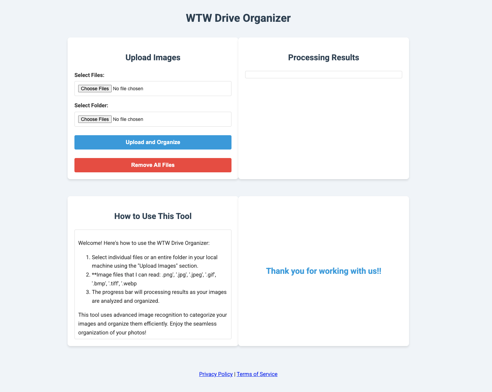

ShoplyAI needed to scale their content output and SEO presence without adding headcount. I'm building an AI-assisted content production pipeline: pillar-cluster SEO architecture, a prompt-engineered writing system with constraints to avoid generic AI patterns, and automated keyword research tooling. This engagement is ongoing.
Larta runs federal research accelerator programs for agencies like NOAA and USDA. Their AI deployments struggled with domain-specific retrieval: specialized terminology, proprietary datasets, and complex document structures that off-the-shelf solutions couldn't handle. I designed a hybrid architecture combining RAG with knowledge graph retrieval, ran a full competitor analysis across existing solutions, and delivered a production-ready product specification with cost modeling and risk assessment. The spec was adopted for their enterprise AI pilot.
Full technical specification covering competitive analysis, feasibility research, and cost modeling: View Business Case PDF. Reach out at frederickcaseyhousand@gmail.com for the password.
Wheel the World had over 100GB of images with no categorization or search. Marketing and sales teams were manually browsing folders to find assets. I built an AI-powered categorization system using AWS Rekognition and a web portal with Smart Search so teams could find what they needed in seconds. It hit over 100,000 API uses in the first month, well past launch targets, and saw immediate adoption across the company.

Internal guide demonstrating the smart search and AI categorization system: View System Guide PDF. Reach out at frederickcaseyhousand@gmail.com for the password.
The marketing team was running manual CRM workflows and generic outreach with low response rates. I built verticalized AI tools that automated CRM workflows within HubSpot, deployed customizable automation with Facebook client funnels, and developed an AI agent that used customer data to send personalized messages through social media. Clickthrough rates improved by roughly 20%, response rates doubled, and the marketing team adopted it within two weeks.
Enterprise-ready multi-agent orchestrator system for automating knowledge work with AI. Features vectorized data traversal and runbook-guided worker agents. Built with TypeScript, React, AI-SDK, and PGvector. Note: this is a boilerplate, and has been used for specific implementations for past clientele.
CLI tool for local file conversions. Converts images, downloads YouTube audio, and processes files for my own personal use cases. I built this tool to streamline the process of adding mp3 files to my underwater headphones for triathlon training. Built with Node.js, FFmpeg, and Sharp for high-performance media processing.
AI-powered Google Drive image organizer using Gemini Vision API. Automatically categorizes and organizes images based on content analysis. Features React frontend, FastAPI backend, and Redis for metadata storage. [Project still in Progress]